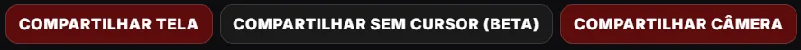

01 — Transmitir
Sua tela do jeito certo
-
Qualidade que você escolhe
De 720p a 4K, de 30 a 120 fps. Quem tem PC bom não fica preso no 720p de ninguém.
-
Áudio sem o Discord
O som do PC vai junto com a tela, menos o Discord. Quem tá na call não escuta a própria voz voltando. Quer mandar só o som do jogo? Também dá.
-
Sem cursor
A setinha do mouse some da transmissão. Em jogo, faz diferença. Ainda tá em beta.
-
Câmera
Uma bolinha da sua webcam por cima da tela. Ou só a câmera, quando a ideia é mostrar a cara mesmo.
